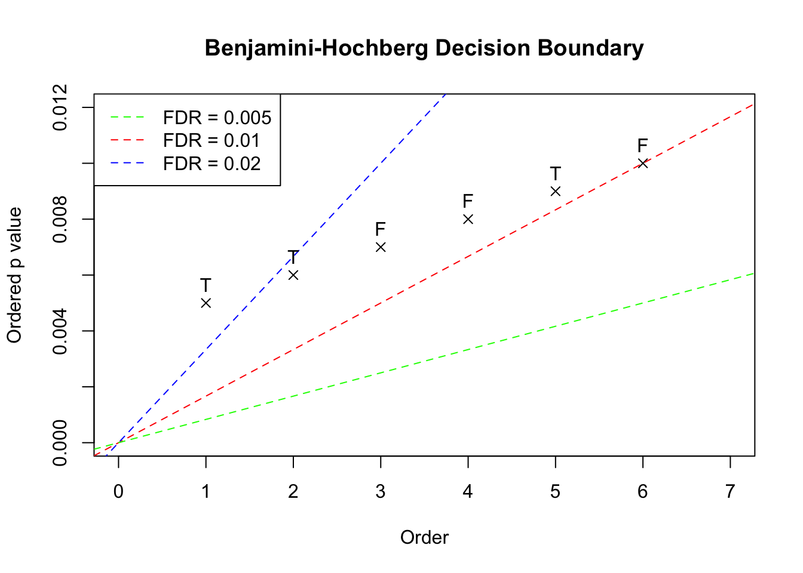
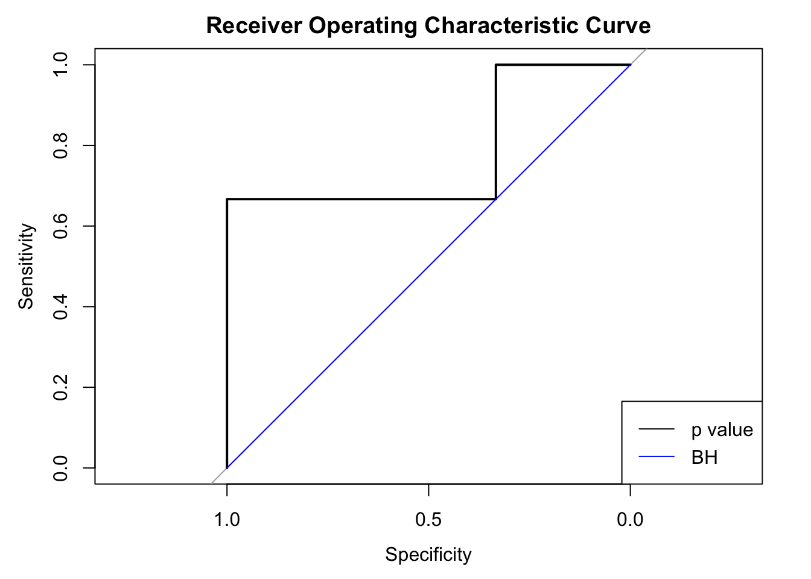

BH and \(p\) values are different?Last updated: 2017-06-02
Code version: aff3b46
We usually use AUC (area under the receiver operating characteristic curve) to measure the performance of a statistical testing procedure. In essence, AUC is solely determined by how the hypotheses are ranked by the procedure. Thus, Matthew’s intuition is that the three methods based on \(p\) values, \(p\) values, Benjamini-Hochberg, and qvalue should give the equivalent AUC. However, it doesn’t appear so in our simulation. It turns out there is a simple explanation for the difference bwteen BH and \(p\) values.
Given a nominal FDR level \(\alpha\), and \(m\) \(p\) values, BH starts with the least significant or largest \(p\) value and compares each ordered \(p\) value \(p_{(k)}\) with \(\frac{\alpha}mk\). Now suppose we have 6 \(p\) values in the increasing order, \(\left\{0.005, 0.006, 0.007, 0.008, 0.009, 0.010\right\}\), plotted as follows. These \(p\) values correpond with hypotheses of true positives (“T”) or false positives (“F”). In this example, the hypotheses associated with the ordered \(p\) values are set to be \(\left\{T, T, F, F, T, F\right\}\).

The three dotted lines in the plot show the three scenarios with BH applied to this data set. The critical decision boundary is when we have the nominal FDR \(\alpha = 0.01\) in red. When \(\alpha < 0.01\), like the green line, no \(p\) value falls below the line and thus no discovery is declared. On the other hand, when \(\alpha > 0.01\), like the blue line, the largest \(p\) value falls below the line and thus all hypotheses would be declared as discoveries. Therefore, under BH, at different nominal FDR levels, we either fail to reject any null hypothesis, or reject all of \(6\) together. In another word, we either have false positive rate (FPR) \(=\) true positive rate (TPR) \(=\) 0, or FRP \(=\) TPR \(=\) 1. Below we plot the two ROC curves by BH and by simply thresholding \(p\) values. In this case using \(p\) values (AUC \(=\) 0.78) is actually better than using BH (AUC = 0.5).

BH indeed doesn’t change the order of hypotheses set by \(p\) values. As in this exmaple, if a hypothesis with a larger \(p\) value is rejected, all hypotheses with smaller \(p\) values will also be rejected; meanwhile, when a hypothesis with a smaller \(p\) value is not rejected, all hypotheses with larger \(p\) values won’t be rejected either.BH is capable of generating ties in hypotheses. As in this exmaple, all \(6\) hypothese have distinctive \(p\) values, yet they are essentially equivalent under BH.This simple illustration shows why we would have different AUC with \(p\) values and BH.
sessionInfo()R version 3.3.3 (2017-03-06)
Platform: x86_64-apple-darwin13.4.0 (64-bit)
Running under: macOS Sierra 10.12.5
locale:
[1] en_US.UTF-8/en_US.UTF-8/en_US.UTF-8/C/en_US.UTF-8/en_US.UTF-8
attached base packages:
[1] stats graphics grDevices utils datasets methods base
other attached packages:
[1] pROC_1.9.1
loaded via a namespace (and not attached):
[1] backports_1.0.5 plyr_1.8.4 magrittr_1.5 rprojroot_1.2
[5] tools_3.3.3 htmltools_0.3.6 yaml_2.1.14 Rcpp_0.12.10
[9] stringi_1.1.2 rmarkdown_1.5 knitr_1.15.1 git2r_0.18.0
[13] stringr_1.2.0 digest_0.6.12 evaluate_0.10 This R Markdown site was created with workflowr